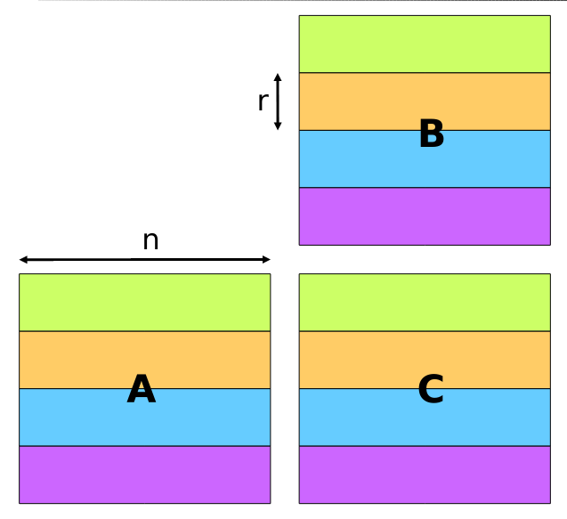
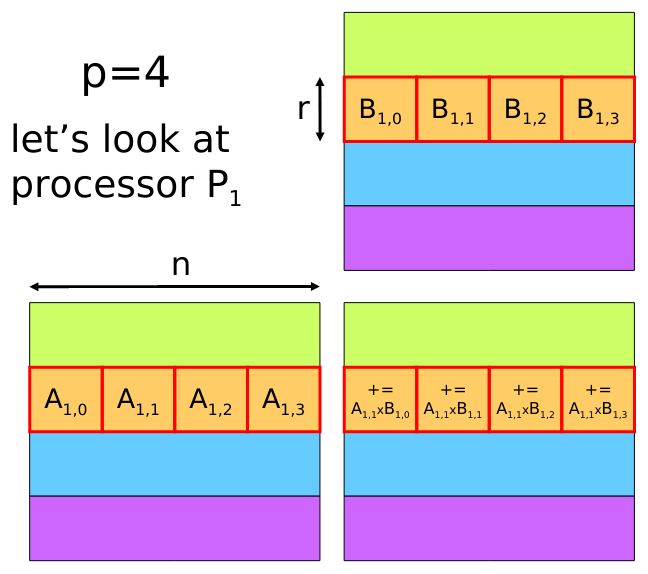
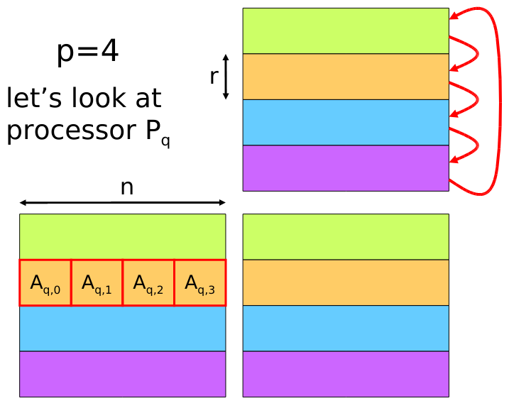

Parallel Algorithms
Thanks to Moore’s law, the conventional wisdom, suggested to wait for newer generation of processors to get more processing power. However, we have reached a point, wherein we can’t get more processing power by just increasing frequency, so manufacturers are pushed to increase the number of cores, to derive processing power. Hence, the need to have exposure into parallel computing is more now than ever before.
Parallel computing though is the way forward, it’s not a magic solution. It comes with it’s own range of caveats and quirks. For example,
-
How will you divide the data between units?
-
How to distribute data to each of the units?
-
How are the dependencies between data/results handled?
-
How to synchronize various parallel units?
-
How reconstruction of the results of individual units occur?
Parallel algorithms answer the above questions(and hardware implementations and firmware/software framework apis enable the same). Without having proper answers for the above questions, having more cores is not going to be of much use. Hence, we can say that the parallel algorithms is the secret sauce that has realized high performance computing across domains.
Moreover, Parallelism is not restricted just to multiple processors running on a chip, it can happen at multiple levels:
-
Between Instructions/Data on a single core. Ex: SIMD compiler Intrinsics
-
Processors on a single chip. Ex: OpenMP, pthreads
-
Machines/Cluster of machines on a network. Ex: MPI
-
Custom/Specialized hardware. Ex: Programming GPGPUs, hardware accelerators etc.
There can also be hybrid solutions that can mix and match various architectures mentioned above. Just like hardware adapt to various needs, the algorithms will need to adapt as well to make best use of hardware and other resources.
Without restricting ourselves to any specific parallel programming paradigms mentioned above, we’ll provide a general idea which can be implemented across multiple paradigms(unless explicitly specified otherwise).
In the following section, we’ll do a comparative theoretical analysis(in terms of time complexity) of how parallelization can improve the performance of sorting algorithms. After that, we will do the same with few parallel algorithms related to linear algebra.
Parallel Sorting Algorithms
Any sorting problem, can be represented as:
\(X = \{ x_1, x_2, .... , x_n \}\)
set of n real numbers stored in an array of:
\(X[ ] = X[0], X[1], .... , X[n-1]\)
For \(n\) elements, there are \(n!\) ways that they can be arranged. The goal is to find 1 permutation out of the \(n!\) that abides to our desired order.
Below is the time complexity(Big O) of some of the conventional sequential sorting algorithms.
| Name | Complexity(O(..)) | Comments |
|---|---|---|
Bubblesort |
\(n^2\) |
Propagates the largest element towards the end of the array in each iteration |
Quicksort |
\(n log_2(n)\) |
Recursive algorithm that sorts across a randomly chosen pivot |
Mergesort |
\(n log_2(n)\) |
Divide and conquer algorithm that divides the array into smallest terminal units, and merges them back while sorting |
In the following sections we introduce various parallel sorting algorithms which are either modifications on the classical ones or unique to parallel paradigm. We theoretically, evaluate the performance gains for each. Some of the assumptions that we make:
-
For \(P\) processes, all data are already allocated
-
All data are to be sorted in ascending order
-
The number of processes \(P\), is in powers of 2.
It’s important to note that the best possible time complexity for a serial algorithm is:
\(O\left( n log_2(n) \right)\)
for a parallelized algorithm it’s:
\(O\left( log_2(n) \right)\)
Thanks to parallelization we can reduce the complexity by a factor of \(n\). This holds true no matter how much units of \(n\) we use.
In fact, practically, in our lab sessions have seen that we need to have proper balance between \(n\) and \(P\). If we put too many processes, then much of time will be lost in synchronization and co-ordination of various processes, in worst cases we are better off using a serial algorithm. If we use too less, then we are not exploiting the full potential of available resources.
Hence, it’s all about finding that "sweet" spot.
Parallel Merge Sort
This is quite similar to the sequential merge sort. The tree structure of the algorithm, makes the distribution of the work between processes fairly simple. This is illustrated in the figure below [1]:
Complexity analysis
For any merge sort, in the worst case:
-
Number of steps to sort a sublist
\(2s - 1\)
where \(s\) is the size of the sublist:
\(s = 2^{i-1}\)
where \(i\) is the \(i^{th}\) iteration.
-
At any given step, number of sub-lists:
\$(n/s) = (n/2^(i-1))\$
where \(n\) is the total number of elements
-
Number of steps in total:
\(log_2(n)\)
In serial merge sort, the time complexity for \(i^{th}\) step is:
\( O\left( (\frac{n}{2^i}) (2^i - 1) \right) = O\left( n \right)\)
Whereas in parallel merge sort the the time complexity for \(i^{th}\) step is:
\( O\left( 2^i - 1 \right) = O\left(2^i\right)\)
We can clearly see that without parallelization, the time remains constant but proportional to size of initial array. But, with parallelization, we have reduced the time, now it’s in proportion to the subarray size. This is because, at any given step all the \(( \frac{n}{2s})\) sub-lists are processed in parallel. Hence, complexity of Parallel merge sort:
\(O\left( \sum_{i=1}^{log_2(n)}( 2^i ) \right) = O(n)\)
Therefore, we see a huge gain, wherein a relatively complex operation such as sorting is reduced to time complexity of a simpler operation such as, for example, say linear search.
Parallel Bubble Sort
A classic serial bubble sort, sorts the array by iteratively moving elements to their respective positions in relation to the end of the in each phase.
In parallel bubble sort the idea is to overlap multiple phases in such a way that the newly started phase doesn’t disturb an on-going phase. Considering the sequence of bubble sort, to achieve this, we need to pipeline the phases in the following manner [2]:
Complexity analysis
In serial bubble sort, \(i^{th}\) phase requires \(n - i\) iterations and we’ll have \(n - 1\) such phases. Hence, we have time complexity:
\(O\left( \sum_{i=1}^{n-1} n - i \right) = O\left( \frac{n(n-1)}{2}\right) = O\left( n^2\right)\)
Now, thanks to parallelization, though each phase will take same time as in serial version, the end time will vary due to pipelining. Consequently, \(i^{th}\) phase will end at time:
\(n - 1 + i\)
Hence, the end time of the algorithm and hence complexity is:
\(O\left( n - 1 + n - 1 \right) = O\left( 2n - 2 \right) = O\left( n \right)\)
Hence, we have reduce complexity from \(n^2\) to \(n\).
Parallel Sort Regular Sampling
In this algorithm we can relax our last initial assumption. Now \(P\) need not be in powers of \(2\), it can be any arbitrary natural number. The algorithm is as follows:
-
Sort local array using any algorithm. If this algorithm is run on distributed network using let’s say MPI, by using framework like OpenMP for local sorting higher throughput can be achieved.
-
Sample P elements at intervals:
\(0, \frac{n}{P^2}, \frac{2n}{P^2}, ..., \frac{(P-1)n}{P^2}\)
-
Gather all these samples in another process and \(P-1\) pivots and broadcast them to all the processes
-
All processes partition their local array into \(P\) pieces based on these pivots.
-
Now each process \(P_i\) retains the \(i^{th}\) partition and sends it’s \(j^{th}\) partition to process \(P_i \forall j \neq i\)
To illustrate with an example [3]:
In short, the intuition is: Sort locally and strategically share with each other parts of locally sorted array using some reference pivots selected among sorted samples.
Complexity Analysis
-
Cost of local computations
-
Local sort(assuming some efficient sequential algorithm was used):
\(O\left( \frac{n}{P} log_2(\frac{n}{P}) \right)\)
-
Sorting regular samples in intermediate step:
\(O\left( P^2 log_2(P^2) \right) = O\left( P^2 log_2(P) \right)\)
-
Merging sublists:
\(O\left( \frac{n}{P} log_2(P) \right)\)
-
-
Communication cost
-
Gathering sample and broadcasting pivots:
\(\approx O\left( 1 \right)\)
-
Total exchange in the last step:
\(O\left( \frac{n}{P} \right)\)
-
If we summate all the costs:
\(O\left( P^2 log_2(P) + \frac{n}{P} log_2(P) + \frac{n}{P} log_2(P) + 1 + \frac{n}{P} \right) = O\left( \frac{n}{P}(1 + \frac{1}{P^2}log_2(nP)) \right) = O(\frac{n}{P})\)
Now, we have effectively reduced the time-complexity to \(t = \frac{n}{P}\) where \(log_2(n) < t < n\).
Parallel Linear Algebra
In computer science, linear algebra plays a dominant role in many domains. The most popular in the recent years is data science and machine learning. Simple linear algebraic operations such as dot product of 2 vectors, matrix-vector & matrix-matrix multiplication are the major types of operations performed in these domains. For ex:
-
To evaluate the performance of model in machine learning, loss functions is used. It is nothing but a multi-dimensional root mean square operation.
-
Back-propagation algorithm effectively is recursive dot product of partial derivatives across multiple layers in neural nets.
Though, the operations are simple, the scale at which they are performed is unprecedented. For example: a simple 'hello world' introduction(MNIST digit recognition) into deep learning involves a model that requires several 256*256 matrix multiplications in one iteration of training. Hence, both these domains are space and computation hungry. With more and more industries adopting these technologies, more avenues in high performance computing are being explored to perform these operations in practical time scales. Parallel algorithms provide the foundation which makes all these are practically possible/feasible.
Here we will consider 2 parallel Matrix-Matrix multiplication algorithms.
The conventional serial matrix multiplication has time complexity of:
\(O\left( n^3 \right)\)
Though the order is in polynomial time, the scale at which this has to be executed, makes it totally impractical to use a naive serial algorithm.
Since, computations of each of the element in the result are independent we have good scope for parallelization. If the size of the matrices can be accommodated within a RAM of a single machine, we can use a framework like OpenMP and achieve speed-up via shared-memory models. However, if the order of the inputs are so large that they need to be distributed across machines, then we will need to use distributed algorithms.
Parallel Matrix Multiplication on distributed system
The algorithm consists of:
-
Division of 3 matrices over the processes based on the rows i,e, each process is assigned \(\frac{n}{P}\) rows.
Figure 4. Data allocation [4] -
In each iteration, every process perform matrix multiplication on it’s local sub-matrix
Figure 5. Local sub-matrix multiplication [5] -
A virtual ring is formed in order to rotate rows between processes i,e, a process sends rows of B to the next process and receives rows of B from the previous process in the virtual ring.
Figure 6. Virtual ring to pass rows [6] -
While the rows are rotated, the corresponding diagonals are rotated within each of the processes.
The algorithm is illustrated below :
Complexity analysis
As we saw from the example,
-
There are \(P\) steps.
-
Each step takes time:
\(max(nr^2w, L + nrb)\)
-
Hence, running time:
\(P ( max(nr^2w, L + \frac{nr}{b})) = max(\frac{wn^3}{P}, L + P(\frac{n}{b}))\)
There are 2 things to note here:
-
Big O
\(O\left( max(\frac{wn^3}{P}, L + P(\frac{n}{b})) \right) = O\left( \frac{wn^3}{P} \right)\)
-
Comparision with Matrix vector complexity:
\(P ( max(nr^2w, nL + \frac{nr}{b}))\)
is the running time of matrix vector multiplication using the same algorithm. Hence, by reduction in factor \(n\), we have saved network latencies!
Parallel Matrix Multiplication within a system
Compared to the distributed version, this is fairly simple. For the conventional triple nested for loop of sequential matrix multiplication:
To achieve speed-up all we need to do is:
-
fork as many threads as possible
-
let threads share the matrices A, B, and C
-
but make sure that the each thread has it’s own iterators
All the above can be accomplished in just 2 lines of code with OpenMP [11]:
Complexity analysis
The serial matrix multiplication as we can see contains 3 nested for loops, each iterating for say, \(n\) dimension. Then time complexity:
\(O\left( n^3 \right)\)
If we assume the OpenMP directives create \(P\) threads which would vectorize the for loop. Then time complexity:
\(O\left( \frac{n^3}{P} \right)\)